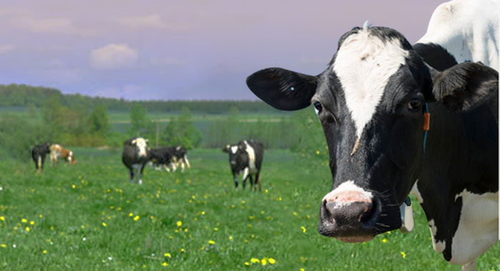

传感器与健康监测Sensors and health monitoring
为了保证农场动物的健康与生产性能的和谐共存，以确保长期的回报和利润。我们通过多类传感设备，多维度监控牲畜生命体征和健康状态。
多种类传感装置部署
通过视频称重系统进行牲畜的身体尺寸的计算，然后同时计算出它的体重变化情况。及时发现体重增减情况，监测牛只增重阶段性目标的是否达成。

多维度体征数据采集
当感应数据完成采集、传输与分析后，从大数据平台中可以实时监测牲畜在咀嚼、躺下、行走、奔跑、喝水、进食，甚至从出生开始的哺乳情况。
模式识别与智能算法
通过数据建模可以预测某头牛是否生病、乏弱、受伤、或刚刚进行过打斗。以此实时提醒人们关注这些动物状态变化，提前采取相应措施，更好的关爱农场动物，尊重其生命过程。